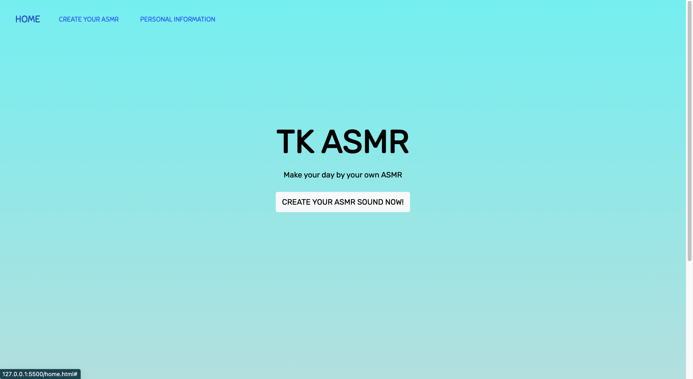
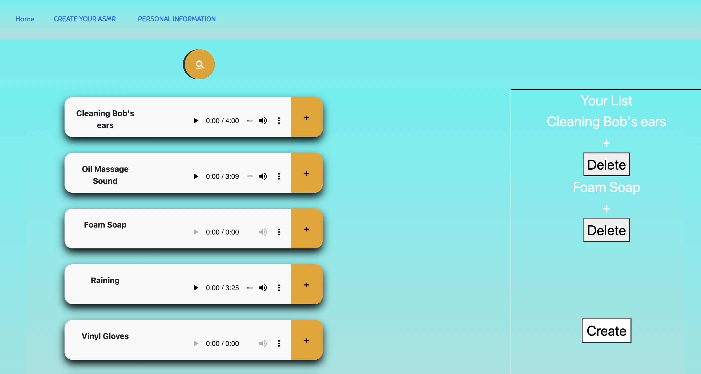

About Me
Hi, I'm Ky Nguyen. I'm passionate about developing web applications and exploring new technologies.
Moreover, I am involved in:
- DePauw Management Fellows Program
- DePauw Information Technologies Associate Program
Currently, I double major in Computer Science and Economics at DePauw University.
Outside of work, I enjoy travelling, playing chess, and learning new things.
If you're interested in working together or just want to say hi, feel free to get in touch with me through my contact page.
Projects
-
MusicHeal
 
Inspiration
We know Mental Health is important because mental health is human experience. ASRM helped us to release stress when we have depression, so we thought it would be great to share the method we use to deal with stress with others while enhancing programming skills. We hope this small project can contribute to bettering the community's mental health.
What it does
website helps people create and customize their own favorites based on provided data of ASMR that we collected on the internet. Users can choose the sounds they like and we will add all of these to a list of ASMR so that users can listen to all their choices afterward. We believe that soundtrack will help people better their mental health.
View our hackathon project at GitHub. Watch how we build it on Youtube. -
Basic Calculator Java Program
This is a simple calculator program that allows you to perform various mathematical operations, including addition, subtraction, multiplication, and division on two numbers, as well as calculate expressions containing parentheses. The program is written in Java and I built this program in my Data Structures & Algorithms class. The calculator includes error handling to prevent invalid inputs and ensures accurate calculations.
The program first takes the arithmetic expression in infix notation and converts it into postfix notation using the shunting yard algorithm. The resulting postfix expression is then evaluated using a stack to keep track of the operands and the operators. The program can handle expressions containing the standard arithmetic operators, parentheses, and negative numbers.
View the code on GitHub. -
Budget Tracking C++ Program
After taking the Financial Accounting class, I was encouraged to build this C++ program to better keep track of my monthly budget. The program will be updated by adding more functionalities such as recording every transactions, catogorize income and expense, or architected a more user-friendly interface.
The budget tracking program is a simple tool for tracking your personal finances. It allows you to easily input your income and expenses, and provides you with a clear overview of your budget. The program is written in C++, and includes features such as error handling to prevent invalid inputs and ensure accurate calculations. Overall, it's a useful tool for anyone looking to manage their finances more effectively.
View the code on GitHub.
Resume
Download my resume here.
Contact
Want to get in touch? You can find me on: